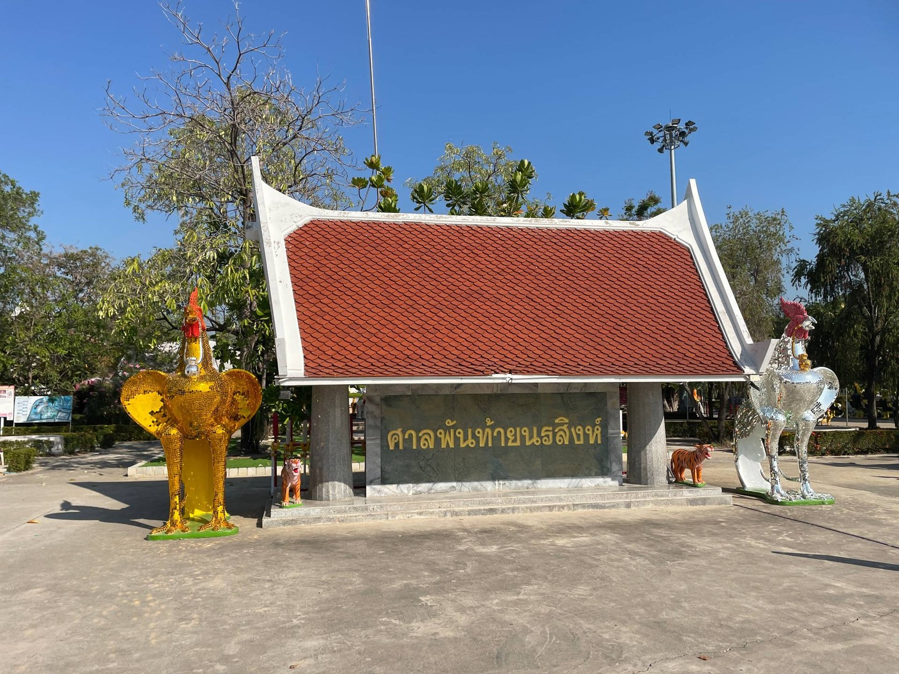
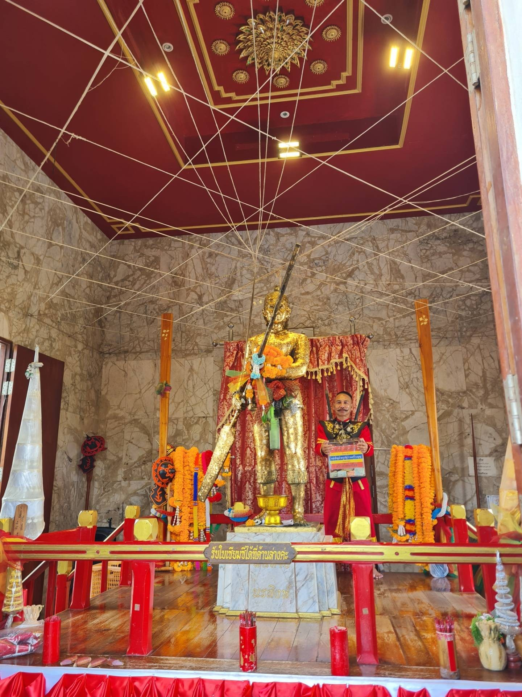
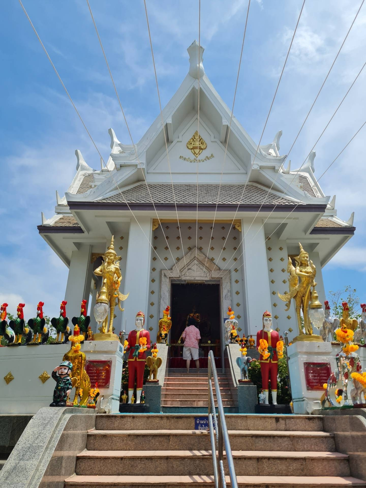
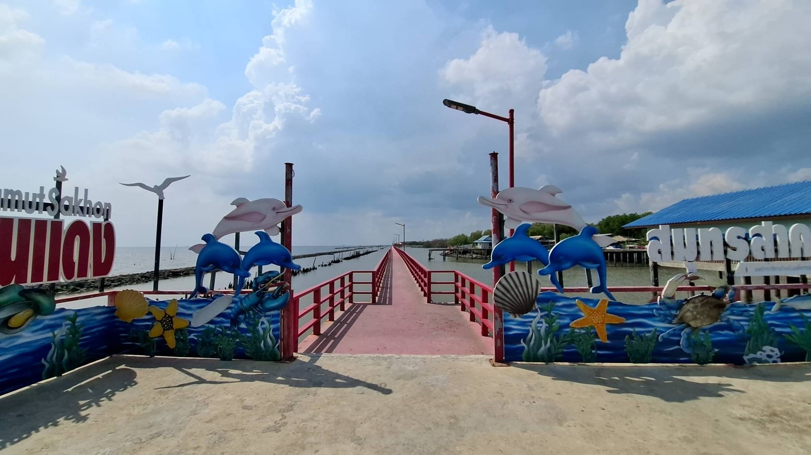
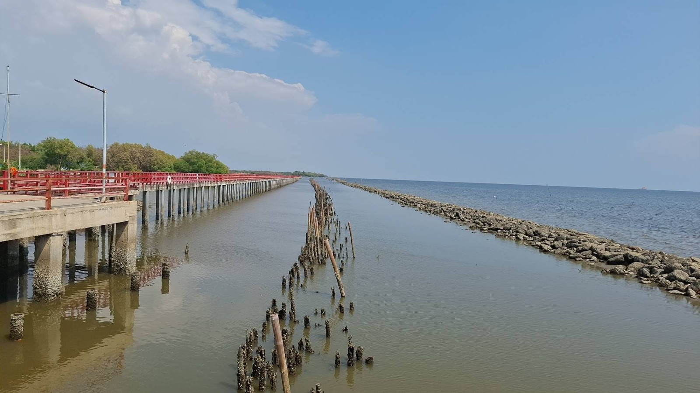
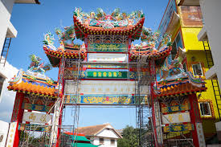
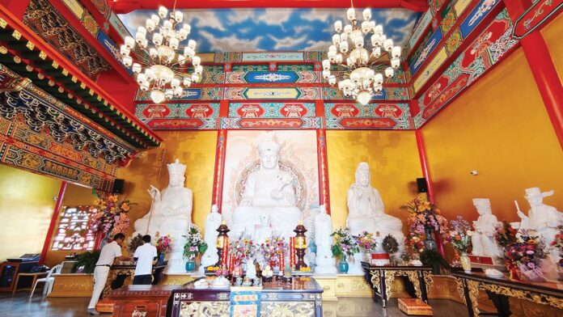

<!DOCTYPE html>
<html lang="th">
<head>
    <meta charset="UTF-8">
    <meta name="viewport" content="width=device-width, initial-scale=1.0">
<link href="https://fonts.googleapis.com/css2?family=Sarabun:wght@300;400;600&family=Playfair+Display:ital,wght@0,600;1,700&family=Cinzel:wght@700&display=swap" rel="stylesheet">
    <link href="https://fonts.googleapis.com/css2?family=Prompt:wght@300;400;600&family=Dancing+Script:wght@700&display=swap" rel="stylesheet">
    <link rel="stylesheet" href="style.css">
</head><script>
    let slideTimers = []; // เก็บตัวแปร Timer ของแต่ละสไลด์

    function initSlideshows() {
        const slideshows = document.querySelectorAll('.slideshow-container');

        slideshows.forEach((slideshow, index) => {
            slideshow.setAttribute('data-index', 0); // เก็บค่าหน้าปัจจุบันไว้ที่ตัวกล่อง
            showSlides(slideshow, 0);
            autoSlide(slideshow);
        });
    }

    // ฟังก์ชันแสดงรูปภาพตาม Index
    function showSlides(container, slideIndex) {
        const slides = container.querySelectorAll('.slide');
        const dots = container.querySelectorAll('.nav-dot');

        let current = slideIndex;
        if (slideIndex >= slides.length) current = 0;
        if (slideIndex < 0) current = slides.length - 1;

        // ซ่อนทุกรูป
        slides.forEach(s => s.classList.remove('active'));
        if (dots.length > 0) dots.forEach(d => d.classList.remove('active'));

        // แสดงรูปที่เลือก
        slides[current].classList.add('active');
        if (dots.length > 0) dots[current].classList.add('active');

        container.setAttribute('data-index', current);
    }

    // ฟังก์ชันเมื่อกดปุ่มลูกศร
    function changeSlide(btn, n) {
        const container = btn.parentElement;
        let currentIndex = parseInt(container.getAttribute('data-index'));
        resetTimer(container); // หยุดเวลาเดิมและเริ่มใหม่
        showSlides(container, currentIndex + n);
    }

    // ฟังก์ชันเมื่อกดที่จุด (Dots)
    function currentSlide(dot, n) {
        const container = dot.parentElement.parentElement;
        resetTimer(container);
        showSlides(container, n);
    }

    // ระบบเล่นอัตโนมัติ
    function autoSlide(container) {
        let timer = setInterval(() => {
            let currentIndex = parseInt(container.getAttribute('data-index'));
            showSlides(container, currentIndex + 1);
        }, 5000); // เปลี่ยนรูปทุก 5 วินาที

        container.setAttribute('data-timer-id', timer);
    }

    // รีเซ็ตเวลาเมื่อมีการกดมือ
    function resetTimer(container) {
        let oldTimer = container.getAttribute('data-timer-id');
        clearInterval(oldTimer);
        autoSlide(container);
    }

    document.addEventListener('DOMContentLoaded', initSlideshows);
</script>

</body> </html>
<body>

    <header>
        <div class="logo"></div>
        <nav>
  	   	<a href="#registers">ลงทะเบียน</a>
		<a href="#timeline">กำหนดการวันที่ 13</a>
		<a href="#day14">กำหนดการวันที่ 14</a>
        </nav>
    </header>

   <section class="hero-banner">
    <div class="hero-overlay">
        <div class="hero-content">
            <p class="wedding-date">กำหนดการงานวันการศึกษาเอกชน ภาคกลาง ครั้งที่ 10 ประจำปี 2569</p>
            <h1>Samutsakhon <span style="font-family: 'Sarabun'; font-style: normal; font-size: 0.7em;">&</span> Samutsongkhram</h1>
            <p>ภายใต้แนวคิด <strong>"สายน้ำสองสมุทร รุดหน้าการศึกษา สร้างสรรค์พัฒนา คุณค่าที่ยั่งยืน"</strong></p>
        </div>
    </div>
</section>

    <section id="timeline" class="timeline-section">
        <h2 class="section-title">กำหนดการงานวันการศึกษาเอกชน  ภาคกลาง ครั้งที่ 10 ประจำปี 2569 <br>
ภายใต้แนวคิด "สายน้ำสองสมุทร รุดหน้าการศึกษา สร้างสรรค์พัฒนา คุณค่าที่ยั่งยืน" <br>
โรงแรม แกรนด์ อินเตอร์ โฮเทล ณ จังหวัดสมุทรสาคร <br>
วันที่ 13 กุมภาพันธ์ 2569
</h2>

        <div class="timeline-container">
            <div class="vertical-line"></div>

            <div class="timeline-item left">
                <div class="dot"></div>
                <div class="content-box">
                    <div class="time-tag">13.00-14.00 น. </div>
            <h4>"รายงานตัวเข้าที่พัก ณโรงแรม แกรนด์ อินเตอร์ โฮเทล"</h4>
                    <a href="https://maps.app.goo.gl/gFmYB5v2bgv7cRNj9?g_st=ac" target="_blank" class="map-button">📍 ดูตำแหน่งที่ตั้ง</a>
                </div>
            </div>

            <div class="timeline-item right">
                <div class="dot"></div>
                <div class="content-box">
                    <div class="time-tag">14.00-14.40 น.</div>
                       <div class="slideshow-container timeline-img">
    
    
    

    <button class="prev" onclick="changeSlide(this, -1)">&#10094;</button>
    <button class="next" onclick="changeSlide(this, 1)">&#10095;</button>

    <div class="dot-container">
        <span class="nav-dot active" onclick="currentSlide(this, 0)"></span>
        <span class="nav-dot" onclick="currentSlide(this, 1)"></span>
        <span class="nav-dot" onclick="currentSlide(this, 2)"></span>
    </div>
</div>
                    <h3>นมัสการศาลพันท้ายนรสิงห์</h3>
                    <a href="https://maps.app.goo.gl/bxDtfYYuGqPhJcGz9?g_st=ac" target="_blank" class="map-button">📍 ดูตำแหน่งที่ตั้ง</a>
                </div>
            </div>

            <div class="timeline-item left">
                <div class="dot"></div>
                <div class="content-box">
                    <div class="time-tag">14.40-15.20 น.</div>
                    <div class="slideshow-container timeline-img">
    
    
    

    <button class="prev" onclick="changeSlide(this, -1)">&#10094;</button>
    <button class="next" onclick="changeSlide(this, 1)">&#10095;</button>

    <div class="dot-container">
        <span class="nav-dot active" onclick="currentSlide(this, 0)"></span>
        <span class="nav-dot" onclick="currentSlide(this, 1)"></span>
        <span class="nav-dot" onclick="currentSlide(this, 2)"></span>
    </div>
</div>
                    <h3>สะพานแดง</h3>
                    <a href="https://maps.app.goo.gl/1K5em97oXp4JeYx88?g_st=ac" target="_blank" class="map-button">📍 ดูตำแหน่งที่ตั้ง</a>
                </div>
            </div>

            <div class="timeline-item right">
                <div class="dot"></div>
                <div class="content-box">
                    <div class="time-tag">15.20-16.00 น.</div>
                    <div class="slideshow-container timeline-img">
    
    
    

    <button class="prev" onclick="changeSlide(this, -1)">&#10094;</button>
    <button class="next" onclick="changeSlide(this, 1)">&#10095;</button>

    <div class="dot-container">
        <span class="nav-dot active" onclick="currentSlide(this, 0)"></span>
        <span class="nav-dot" onclick="currentSlide(this, 1)"></span>
        <span class="nav-dot" onclick="currentSlide(this, 2)"></span>
    </div>
</div>
                    <h3>ศาลเจ้าพระหยกขาว</h3>
                    <a href="https://maps.app.goo.gl/yUhxiNuNWFzrNQYo8?g_st=ac" target="_blank" class="map-button">📍 ดูตำแหน่งที่ตั้ง</a>
                </div>
            </div>
         <div class="timeline-item left">
                <div class="dot"></div>
                <div class="content-box">
                    <div class="time-tag">16.00-18.00 น.</div>
                    <h3>พักผ่อนตามอัธยาศัย</h3>
                </div>
            </div>
 <div class="timeline-item right">
                <div class="dot"></div>
                <div class="content-box">
                    <div class="time-tag">18.00-18.30 น.</div>
  <h3>"รายงานตัวเข้างานเลี้ยง สายน้ำสองสมุทร"</h3> <br>
                    <h3>● รับฟังการบรรเลงดนตรีจากโรงเรียนเอกชนนอกระบบจังหวัดสมุทรสาครจากโรงเรียนดนตรีโซนาต้า</h3> <br>
<h3>● ศึกษาธิการจังหวัดสมุทรสาคร กล้าวต้อนรับแขกผู้มีเกียรติ </h3><br>
<h3>● ชมการแสดงของนักเรียนโรงเรียนเอกชนจังหวัดสมุทรสาคร</h3>

<p>ชุดที่ 1 ชื่อชุดการแสดง สรรเสริญภูผามนตรา <br>
<br>
</h3>
                   <h3> <p>● ชมการแสดงของนักเรียนโรงเรียนเอกชนนอกระบบจังหวัดสมุทรสงคราม </h3>
ชุดที่ 1 thai modern massage <br>
ชุดที่ 2  thai sappaya massage <br><br>
 <h3>● รับฟังการบรรเลงดนตรีจากโรงเรียนดนตรีโซนาต้า โรงเรียนเอกชนนอกระบบจังหวัดสมุทรสาคร</h3>
</p>
                </div>
            </div>
 <div class="timeline-item left">
                <div class="dot"></div>
                <div class="content-box">
                    <div class="time-tag">21.00 น.</div>
                    <h3>ปิดงาน</h3>
                </div>
            </div>
        <div id="register" class="registration-area">
 <section id="day14" class="timeline-section">
    <div class="timeline-container">
        <div class="vertical-line"></div>

        <div class="title-wrapper">
            <h2 class="section-title overlay-line">
                กำหนดการงานวันการศึกษาเอกชน ภาคกลาง ครั้งที่ 10 ประจำปี 2569 <br>
                <small>"สายน้ำสองสมุทร รุดหน้าการศึกษา สร้างสรรค์พัฒนา คุณค่าที่ยั่งยืน"</small> <br>
                ณ โรงเรียนสามชัยวิเทศศึกษา จังหวัดสมุทรสาคร <br>
                วันที่ 14 กุมภาพันธ์ 2569
            </h2>
        </div>

        <div class="timeline-item left">
            <div class="dot"></div>
            <div class="content-box">
                <div class="time-tag">08.00-08.30 น.</div>
                <h3>"ลงทะเบียนเข้าร่วมกิจกรรม"</h3>
                <p>ประธานในพิธีและคณะ เดินทางมาถึงบริเวณงาน</p>
                <a href="https://maps.app.goo.gl/Dp1mjeTvt71Syejg9?g_st=ac" class="map-button">📍 ดูตำแหน่งที่ตั้ง</a>
            </div>
        </div>

        </div>
</section>
            <div class="timeline-item right">
                <div class="dot"></div>
                <div class="content-box">
                    <div class="time-tag">08.30-09.00 น.</div>
                    <h3>● การแสดงชุดที่ 1  เพรชแห่งนาข้าว เกลือแห่งหัวใจ </h3>
			<h3>● การแสดงชุดที่ 2  จินตลีลาหนึ่งหยาดเพรชในร้อย </h3>
                </div>
            </div>

            <div class="timeline-item left">
                <div class="dot"></div>
                <div class="content-box">
                    <div class="time-tag">09.00-09.30 น.</div>
                    <h3>พิธีเปิดงาน วันการศึกษาเอกชน ภาคกลางครั้งที่ 10</h3>
			<p>● ประธานในพิธีจุดธูป เทียน บูชาพระรัตนตรัย <br>
			<p>● ร่วมร้องเพลงสรรเสริญพระบารมี <br>
			<p>● ถวายความอาลัยแด่สมเด็จพระพันปีหลวง <br>
			<p>● ผู้ว่าราชการจังหวัด กล่าวต้อนรับ เลขาธิการ  สช. และแขกผู้มีเกียรติ <br>
			<p>● กล่าวรายงาน การจัดงานวันการศึกษาเอกชน ภาคกลาง ครั้งที่ 10  ประจำปี 2569 โดย นาย มณฑล  ภาคสุวรรณ์  เลขาธิการ สช.<br>
                </div>
            </div>

            <div class="timeline-item right">
                <div class="dot"></div>
                <div class="content-box">
                    <div class="time-tag">09.30-10.00 น.</div>
                    <h3>● การแสดงชุดที่ 3 สายน้ำสองสมุทร</h3>
			<h3>● การแสดงชุดที่ 4 ของดีสองสมุทร</h3>
                </div>
            </div>
         <div class="timeline-item left">
                <div class="dot"></div>
                <div class="content-box">
                    <div class="time-tag">10.00-11.30 น.</div>
                    <h3>พิธีมอบโล่รางวัล ยกย่อง เชิดชูเกียรติ ผู้บริหารโรงเรียน ครู นักเรียน เจ้าหน้าที่และผู้ทำคุณประโยชน์ต่อการศึกษา
</h3>
                </div>
            </div>
 <div class="timeline-item right">
                <div class="dot"></div>
                <div class="content-box">
                    <div class="time-tag">11.30-12.00 น.</div>
                    <h3>พิธีมอบธง การจัดงานวันการศึกษาเอกชนภาคกลางครั้งที่  11  ประจำปี 2569 ให้กับเจ้าภาพครั้งต่อไปได้แก่จังหวัดเพรชบุรี</h3> <br>
                </div>
            </div>
 <div class="timeline-item left">
                <div class="dot"></div>
                <div class="content-box">
                    <div class="time-tag">12.00-12.30 น.</div>
                    <h3>"เสร็จพิธี ท่านประธานและแขกผู้มีเกียรติเดินชชมบูธนิทรรศการนักเรียนและร้านค้าชุมชนของดีสองสมุทร"</h3>
                </div>
            </div>
<div class="timeline-item left">
                <div class="dot"></div>
                <div class="content-box">
                    <div class="time-tag">12.30 น.</div>
                    <h3>"รับประทานอาหารกลางวัน"</h3>
                </div>
            </div>

    </section>
 <div id="registers" class="registration-area">
            <p>เพื่อความสะดวกในการเตรียมงาน กรุณาลงทะเบียน</p>
            <a href="https://docs.google.com/forms/d/e/1FAIpQLSeHwHEWPLb1uaMdL80FAWmzrGboNGr14vSY6qmgyaGouWqhiw/viewform" target="_blank" class="google-form-btn">📝 ลงทะเบียนเข้าร่วมงาน </a>
        </div>
    <footer class="custom-footer">
        <p>หมายเหตุ : กำหนดการนี้อาจเปลี่ยนแปลงได้ตามความเหมาะสม</p>
    </footer>

</body>
</html>

